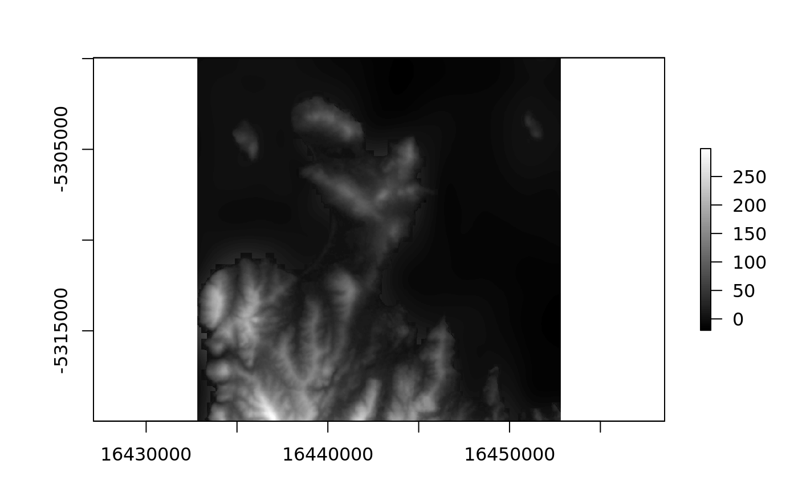

Obtain imagery or elevation data by location query. The first argument
loc may be a spatial object (sp, raster, sf) or a 2-column matrix with a single
longitude and latitude value. Use buffer to define a width and height to pad
around the raw longitude and latitude in metres. If loc has an extent, then
buffer is ignored.
cc_location(loc = NULL, buffer = 5000, type = "mapbox.satellite", ..., zoom = NULL, max_tiles = NULL, debug = FALSE) cc_macquarie(loc = c(158.93835, -54.49871), buffer = 5000, type = "mapbox.outdoors", ..., zoom = NULL, max_tiles = NULL, debug = FALSE) cc_davis(loc = c(77 + 58/60 + 3/3600, -(68 + 34/60 + 36/3600)), buffer = 5000, type = "mapbox.outdoors", ..., zoom = NULL, max_tiles = NULL, debug = FALSE) cc_mawson(loc = c(62 + 52/60 + 27/3600, -(67 + 36/60 + 12/3600)), buffer = 5000, type = "mapbox.outdoors", ..., zoom = NULL, max_tiles = NULL, debug = FALSE) cc_casey(loc = cbind(110 + 31/60 + 36/3600, -(66 + 16/60 + 57/3600)), buffer = 5000, type = "mapbox.outdoors", ..., zoom = NULL, max_tiles = NULL, debug = FALSE) cc_heard(loc = c(73 + 30/60 + 30/3600, -(53 + 0 + 0/3600)), buffer = 5000, type = "mapbox.outdoors", ..., zoom = NULL, max_tiles = NULL, debug = FALSE) cc_kingston(loc = c(147.70837, -42.98682), buffer = 5000, type = "mapbox.outdoors", ..., zoom = NULL, max_tiles = NULL, debug = FALSE) cc_elevation(loc = NULL, buffer = 5000, ..., zoom = NULL, max_tiles = NULL, debug = FALSE)
| loc | a longitude, latitude pair of coordinates, or a spatial object |
|---|---|
| buffer | with in metres to extend around the location, ignored if 'loc' is a spatial object with extent |
| type | character string of provider imagery type (see Details) |
| ... | arguments passed to internal function, specifically |
| zoom | desired zoom for tiles, use with caution - if |
| max_tiles | maximum number of tiles to be read into memory - if |
| debug | optionally print out files that will be used |
RasterBrick, with RGB
cc_elevation does extra work to unpack the DEM tiles from the RGB format.
Available types are 'elevation-tiles-prod' for AWS elevation tiles, and 'mapbox.satellite', 'mapbox.outdoors', 'mapbox.terrain-rgb' or any string accepted by Mapbox services.
Note that arguments max_tiles and zoom are mutually exclusive. One or both must be NULL. If
both are NULL then max_tiles = 16L.
Custom Mapbox styles may be specified with the argument base_url in the form:
"https://api.mapbox.com/styles/v1/mdsumner/cjs6yn9hu0coo1fqhdqgw3o18/tiles/512/{zoom}/{x}/{y}"
Currently must be considered in-development.
dem <- cc_kingston(buffer = 1e5, type = "elevation-tiles-prod")#> Preparing to download: 16 tiles at zoom = 9 from #> https://s3.amazonaws.com/elevation-tiles-prod/geotiff/## requres Mapbox key set in env var 'MAPBOX_API_KEY'# NOT RUN { im <- cc_macquarie() library(raster) plotRGB(im) ## with a custom style u <- "https://api.mapbox.com/styles/v1/mdsumner/%s/tiles/512/{zoom}/{x}/{y}" u <- sprintf(u, "cjs6yn9hu0coo1fqhdqgw3o18") im <- cc_location(cbind(147, -42), base_url = u) # }